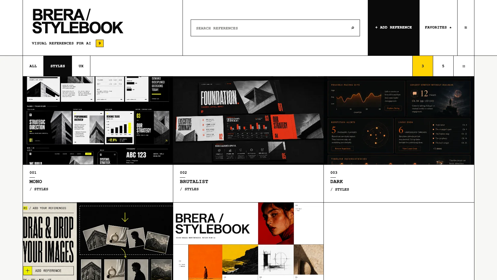
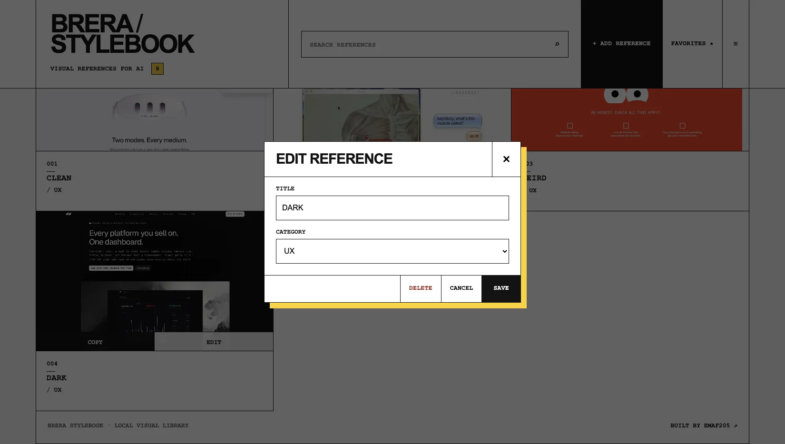
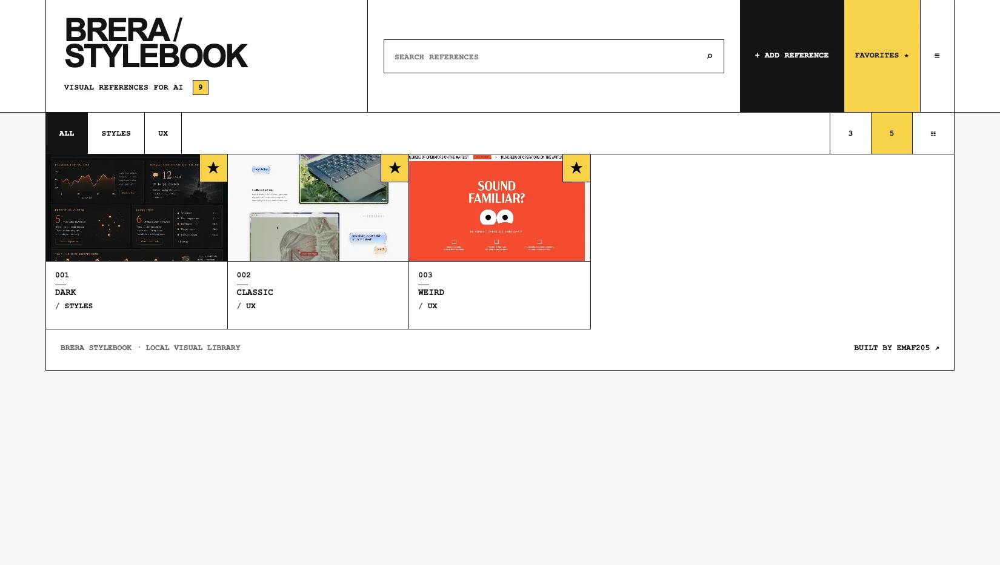
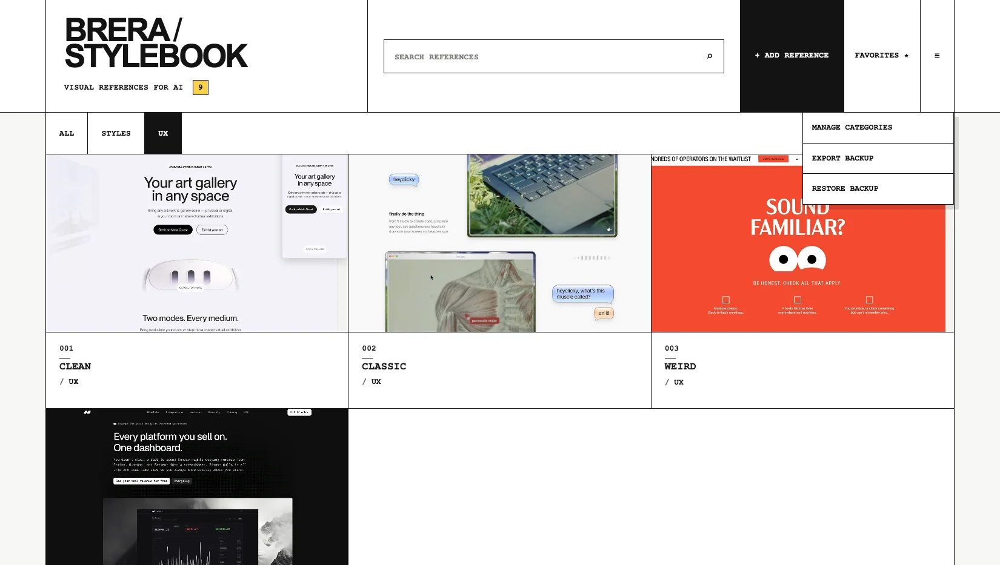

Short answer: organize visual references for retrieval, not storage. Keep one working library, use a small set of categories, rename images by the visual idea you want to remember, use favourites for current work, and make the last step a direct handoff into the AI tool.
What is a visual reference library?
A visual reference library is an organized collection of images that you expect to retrieve and use again. It can contain photographs, layouts, interfaces, typography, lighting, materials, compositions, packaging, environments, character references, color systems, data visualizations, illustration styles or any other image that helps you make a future decision.
The useful distinction is not where the image is stored. It is whether you can answer three questions quickly: what is this reference useful for, where can I find it, and how do I move it into the next task? A folder full of screenshots can be a storage archive. It becomes a reference system only when retrieval and reuse are deliberate.
For AI-assisted work, references often become part of the conversation itself. You may show a model a layout, lighting treatment, material, composition or design language and then explain which properties matter. That makes reference management part of the prompt workflow rather than a separate design task.

Why folders fail as a reference system
Folders are good at file storage. They are less effective when the retrieval cue is visual rather than textual. A file manager can tell you where IMG_2048.png lives, but that name does not tell you that it contains the red editorial lighting, dense dashboard layout or packaging detail you remember.
The problem grows because visual references often arrive from different sources. Screenshots land in one folder, downloaded images in another, project assets in client directories, phone captures in the camera roll, and saved links in a browser or social platform. The collection becomes fragmented before you consciously decide to organize it.
When you need a reference during an active task, the cost is not only search time. It is also context switching. You stop the current prompt, brief or design decision, open storage locations, inspect files, reconstruct why an image mattered, then return to the task. A good library shortens that path.
Do not solve this by creating a deeper folder hierarchy. Deep hierarchies often move the friction from retrieval to filing. The better question is: what information will help me recognize and retrieve this reference later?
Visual reference library vs mood board vs reference board vs folders
These tools overlap but do different jobs. Using the right layer avoids both over-organization and repeated work.
| Tool | Primary job | Typical lifespan | Best use |
|---|---|---|---|
| Folders | Store files | Long-term | Projects, source files, exports, delivery |
| Mood board | Present one visual direction | Project or campaign | Alignment, presentation, art direction |
| Reference board | Place selected references together | Project or study session | Comparison, drawing, design exploration |
| Reference library | Retrieve reusable source material | Long-term and cumulative | Repeated creative and AI workflows |
A mood board is usually an output: a curated arrangement created to communicate a direction. A reference library is an input system: the larger source collection from which you select material for mood boards, prompts, briefs, presentations and future projects.
The distinction matters because a reusable library should not be organized around one client or one campaign. It should preserve useful visual decisions after the project ends.
What AI workflows change about reference management
AI tools add a second use for visual references: the image can become input context. OpenAI documents that ChatGPT accepts image inputs added through upload, drag-and-drop or clipboard paste. The interface and limits can change, so the durable principle is not a specific button; it is the ability to move a selected reference from your library into a visual AI workflow. OpenAI image-input documentation ↗
This changes the design of the library. The endpoint is no longer merely “find the image.” The endpoint is “find the image and use it with minimal friction.” A useful AI-oriented reference system therefore needs:
- visual browsing, because you often remember appearance before filename;
- simple classification, so adding a reference does not become administrative work;
- searchable names, because visual memory needs textual anchors;
- a working set such as favourites;
- a clear handoff into the destination tool;
- a backup process if the library is stored locally.
The reference does not replace the instruction. If you add an image to an AI conversation, tell the model what role the image should play: composition, lighting, material, typography, hierarchy, palette, camera angle, rhythm or another specific property. Otherwise the model must guess what you intended.
The core system: collect, classify, retrieve, reuse
Most reference-library systems fail because they optimize only one stage. Collecting is easy, but retrieval is poor. Classification is detailed, but maintenance is too slow. Search works, but the final handoff still requires multiple steps. Use four stages and judge the system by the whole loop.
1. Collect selectively
Do not save every attractive image. Save images with a probable future job. Before adding a reference, be able to finish a sentence such as:
- I may use this for a hero-section composition.
- I want to remember this lighting contrast.
- This is a useful example of dense but readable information hierarchy.
- I may reuse this material treatment.
- This shows a specific pose, framing or camera distance.
This filter reduces noise before taxonomy or search have to solve it. A 300-image collection in which every item has a reason to exist can outperform a 5,000-image dump.
2. Classify with a small number of categories
Categories should mirror the decisions you make. A web designer may use Hero, Navigation, Forms, Dashboards, Pricing, Typography. A photographer may use Lighting, Poses, Framing, Color, Sets, Editorial. An AI image creator may use Composition, Lighting, Materials, Characters, Environments, Color.
Start with roughly five to eight broad categories. That is not a rule; it is a bias toward simplicity. Add a category only after you repeatedly need a distinction that the current structure cannot express.
A category is too narrow when it contains one or two images and you cannot predict future additions. It is too broad when browsing it still feels like searching Downloads.
3. Build retrieval into names, search and favourites
Machine filenames are poor memory cues. Rename by the property you expect to search later. Examples:
| Weak name | Better retrieval name |
|---|---|
| Screenshot 2026-08-24.png | yellow editorial hero asymmetric grid |
| IMG_4087.jpg | soft red lounge low ambient lighting |
| design-final.webp | dense analytics dashboard compact cards |
| ref2.jpg | brutalist black white poster typography |
Use search to recover the semantic cue you remember. Use favourites as a smaller active layer for current work, not as a permanent hall of fame. If every image becomes a favourite, the filter stops carrying information.
4. Make reuse the endpoint
After retrieval, the next action should be obvious. In an AI workflow that may mean copying the image, dragging it into the conversation, uploading it, or opening it beside the prompt. The best method depends on the destination, but the system should minimize extra file handling.
StyleBook is built around this endpoint: select a reference, copy it, then paste it into a compatible AI tool. The current product also shows a visible copy confirmation so the user knows the action completed.
See the actual product workflow
Watch the 21-second StyleBook demo, then decide whether the workflow fits how you use visual references.
How to build a taxonomy that stays usable
Taxonomy is where people often over-engineer. They create nested folders, tags, sub-tags, client names, media types, styles, colors and years before they know which distinctions actually matter. The result may be precise but expensive to maintain.
Use this sequence instead:
- List your recurring retrieval questions. What do you actually search for during work?
- Create categories for the biggest stable distinctions.
- Put descriptive variation in the title. Do not create a category for every adjective.
- Use favourites for temporary priority.
- Review only when retrieval fails. Do not reorganize because the system looks imperfect.
Suppose you repeatedly work on websites. A category called Web Design may be too broad. Six categories such as Hero, Navigation, Content, Forms, Data, Commerce may be enough. You can put “dark,” “minimal,” “editorial,” “high-density,” or “yellow accent” in titles rather than adding those as separate categories.
For AI image work, categories such as Composition, Lighting, Character, Environment, Material, Color often map more directly to prompt decisions than categories based on project names.
How to name visual references for search
A good title should describe the feature that caused you to save the image. Do not try to caption the entire image. Capture the retrieval hook.
Useful naming dimensions include:
- subject: editorial portrait, dashboard, packaging, retail interior;
- composition: centered, asymmetric, split-screen, close-up, overhead;
- lighting: soft side light, hard flash, red ambient, window light;
- visual system: brutalist, editorial, minimal, dense, monochrome;
- mechanism: sticky CTA, mega navigation, stacked cards, data table;
- material: brushed metal, translucent plastic, rough paper, glass;
- use case: landing hero, campaign key visual, pricing layout, character pose.
Combine two or three strong cues. “Soft red editorial lounge lighting” is more useful than either “red” or a 20-word description. Naming is not documentation; it is a search index for your future self.
How to handle duplicates and near-duplicates
Duplicate images are not automatically bad. Two similar references may encode different decisions. The problem is keeping variants without knowing why both matter.
When two images are nearly identical, keep both only if you can state the difference in the title or category. For example: one image may be useful for composition, the other for material detail. If there is no meaningful distinction, remove one.
This rule prevents the library from becoming visually repetitive while preserving legitimate variants.
Use favourites as a temporary working set
Favourites work best as a layer of current priority. Use them for references you expect to use this week, a campaign direction, a current client, a repeated visual system or a set you want available without searching.
Review favourites periodically and remove items that are no longer active. The underlying library remains the archive; favourites are the short list.
How to use visual references with ChatGPT and other AI tools
Do not rely on the image alone to communicate intent. A reference can contain dozens of possible signals. Tell the model which signals matter and which should be ignored.
A useful prompt pattern is:
Use the attached image as a reference for [specific property]. Preserve [what matters]. Do not copy [what should change]. Create [desired output] for [context].Examples:
- Web design: “Use this as a reference for information density and section rhythm. Do not copy the brand, colors or text. Propose a responsive SaaS homepage structure for a research product.”
- Image generation: “Use this image only for lighting direction and camera distance. Keep the subject different. Create a quiet editorial portrait with neutral clothing and a dark studio background.”
- Campaign concept: “Use these two references for composition and typography scale. Do not reuse logos or copy. Create three art-direction routes for a software launch.”
- Critique: “Compare my current layout with this reference. Focus on hierarchy, spacing and navigation density. Explain what the reference does more clearly.”
The library improves this workflow because the reference has already been selected for a known reason. You are not searching and prompting at the same time.
Five practical reference-library workflows
Workflow 1 — AI image generation
Organize around variables that influence the generated image: composition, lighting, environment, material, character, color and camera. Select one or two references with distinct roles. In the prompt, state the role of each image. Avoid attaching a large set without explaining which signals matter.
Workflow 2 — Web and interface design
Collect screenshots by reusable mechanism: hero, navigation, pricing, data visualization, forms, onboarding, responsive navigation, footer, empty state. Rename each screenshot by what made it useful. When asking AI to design or critique an interface, attach a small reference set and ask about a specific dimension such as density, hierarchy or responsive behavior.
Workflow 3 — Brand and campaign direction
Separate durable brand references from campaign-specific material. Durable references might include typography scale, texture, photography behavior or color relationships. Campaign material can then be selected from the larger library without becoming the library structure itself.
Workflow 4 — Photography and video pre-production
Categories may include framing, poses, lighting, location, color, wardrobe and camera movement. Keep reference names practical: “hard top light close portrait” is more useful during planning than a source filename. Build the shot list or treatment from selected references rather than mixing the master archive into the presentation.
Workflow 5 — Presentation and document design
Save references for title slides, comparison layouts, charts, tables, editorial spreads, section dividers and closing pages. When using AI to draft a visual direction, attach the relevant reference and ask for structural principles rather than superficial copying.
Audit your current reference mess before importing it
Do not begin by moving every image you own into a new library. First identify what you already have and which parts are worth preserving. A fast audit is more useful than a full migration.
Open the places where references usually accumulate: Downloads, Desktop, Screenshots, project folders, camera roll, browser bookmarks, Pinterest boards, saved social posts, presentation files and old mood boards. You are not trying to catalog everything. You are looking for repeated patterns.
Make four decisions:
- Keep: references with a clear reusable property.
- Project-only: material that belongs to one client or job but is not useful outside it.
- Duplicate: copies or near-copies that add no new information.
- Unknown: images you cannot explain. Keep these outside the main library until their value becomes clear.
Then count the kinds of decisions represented by the useful images. If half your saved material is interface design and the rest is photography, typography and packaging, your starting categories should reflect that reality. Do not import someone else's taxonomy from a productivity article if it does not match what you collect.
During the audit, write down the phrases you naturally use when looking for an image: “red editorial lighting,” “pricing cards,” “soft packaging,” “overhead desk,” “clean dashboard,” “wide hero,” “grainy portrait.” Those phrases are more valuable than formal metadata because they reveal your real retrieval language.

Naming formulas for different kinds of visual work
A single naming formula will not fit every discipline. Use a compact sequence that reflects the decisions you make most often.
| Work | Useful naming formula | Example |
|---|---|---|
| Web / UI | page type + mechanism + visual treatment | pricing grid compact black cards |
| Photography | subject + framing + lighting | portrait close-up hard side light |
| Brand | asset + style + material / color | packaging minimal silver embossed type |
| AI image generation | composition + light + environment | centered figure red ambient corridor |
| Presentation | slide role + information pattern + style | comparison slide split editorial layout |
| Interior / product | object / space + material + atmosphere | lounge chrome red low light |
Do not encode information you never search. Dates, source domains, pixel dimensions and client codes may matter in a production asset manager, but they can make a personal reference title harder to scan. Keep the title focused on recognition; keep legal or source information elsewhere when required.
How to use multiple visual references in one AI prompt
Multiple references are useful when they have distinct roles. They become confusing when they overlap without instruction.
Before attaching more than one image, assign each one a job. For example:
- Reference A: composition and camera distance;
- Reference B: lighting and palette;
- Reference C: typography or interface density.
Then write the prompt so those roles are explicit. A practical pattern is:
Reference A controls [property]. Reference B controls [property]. Ignore [elements that should not transfer]. Create [output] for [context]. Keep [constraints].This is stronger than “combine these images” because it reduces ambiguity. It also changes how you should organize the library: references become more useful when their titles identify the property they can contribute.
For design critique, the same logic works in reverse. Attach your current work plus one or two references and ask the model to compare a defined dimension: information hierarchy, spacing, lighting, composition, navigation density or another concrete property. The reference is a benchmark, not a command to imitate every visible detail.
When a model produces the wrong influence, adjust the instruction before changing the library. Reference management solves retrieval; prompting solves interpretation.

Reference-library structures by role
If you are unsure how to start, use a role-specific baseline and change it after real use.
Designer
Start with Hero, Navigation, Content, Forms, Data, Commerce, Typography and Motion. Use titles for style adjectives and specific mechanisms. Keep client delivery assets outside the reusable library unless they contain a pattern you are allowed and likely to reuse.
Content creator or marketer
Start with Hooks, Thumbnails, Layouts, Photography, Product, Social, Ads and Editorial. Name references by the visual mechanism: “single product hard shadow,” “headline over portrait,” “three-card proof section,” “high-contrast carousel opener.”
AI image creator
Start with Composition, Lighting, Camera, Character, Environment, Material, Color and Typography. A prompt can then pull one reference from each relevant dimension instead of searching for a finished image that already contains the exact combination.
Photographer or videographer
Start with Framing, Lighting, Poses, Locations, Wardrobe, Color and Movement. Keep shot-specific boards separate from the long-term reference archive.
Teacher, trainer or presenter
Start with Covers, Diagrams, Tables, Comparisons, Timelines, Data, Editorial and Closings. Use the library to specify visual direction when asking an AI system to structure a deck or learning asset.
The categories are starting points. The real test is whether you can retrieve the right image while working.
When a visual reference library is the wrong tool
Do not use a reference library for everything. A project file system is better for deliverables, source files and versioned client assets. A mood-board tool is better when the task is arranging a specific visual direction for presentation. A shared digital asset management platform is better when a team needs permissions, approval workflows, central governance or enterprise-scale metadata.
A personal reference library is strongest when the same person repeatedly collects visual material and needs to retrieve it across projects. If your problem is collaboration rather than retrieval, choose for collaboration.
How to tell whether your library is actually working
You do not need analytics. Test four observable outcomes:
- Retrieval: can you find a remembered image in under a minute without opening multiple unrelated folders?
- Filing: can you add and classify a new reference without stopping to debate the taxonomy?
- Reuse: can you move the selected reference into the next tool without unnecessary export steps?
- Maintenance: can the system remain useful for weeks without a large cleanup session?
If retrieval is slow, improve naming or categories. If filing is slow, simplify the taxonomy. If reuse is slow, improve the handoff. If maintenance is heavy, remove metadata that is not helping.
The goal is not a perfectly organized archive. It is a collection that remains usable while you are doing real work.
Local-first visual reference libraries: benefits and responsibilities
A local-first library keeps the working collection on the current device instead of requiring a remote product backend for the core workflow. This can reduce dependence on an account or hosted service and gives the user direct control over the working files.
Local storage also creates responsibilities. Browser data can be cleared. Profiles can change. Devices can fail. A local library without backup is fragile.
The current StyleBook release stores the working library in the browser and includes backup export and restore. The included README recommends exporting backups regularly, especially before clearing browser data, changing browsers or moving to another computer.
A simple backup policy
- Export a backup after a meaningful import or reorganization.
- Export before clearing browser data.
- Export before changing browser or device.
- Keep at least one backup outside the browser profile.
- Test restore when the library becomes important enough that losing it would be costly.
Which image formats matter?
The current StyleBook release supports PNG, JPEG, WEBP and GIF. These formats cover common screenshots, photographs, downloaded web images and lightweight animated references.
| Format | Common use | Practical note |
|---|---|---|
| PNG | Screenshots, UI, graphics | Good for sharp text and interface details |
| JPEG | Photography | Efficient for photographic references |
| WEBP | Web images | Common in modern sites and often compact |
| GIF | Simple animation | Useful when motion itself is the reference |
Format support is not the main value of a reference library. Retrieval and reuse are. Add formats because they solve a real input problem, not to maximize a feature count.
How to decide whether a reference deserves to stay
Use four filters:
- Specificity: can you say what is useful about the image?
- Future use: can you imagine a plausible task in which it helps?
- Distinctiveness: does it add something not already represented by five similar images?
- Retrievability: can you name or classify it so you can find it again?
If an image fails all four, it is probably visual clutter. If it passes only one, keep it temporarily and decide later.
Ten mistakes that make visual reference libraries worse
1. Saving everything
Collection size is not the goal. Keep references with a clear future role.
2. Creating too many categories
If adding one image requires a taxonomy decision every time, the system will decay.
3. Keeping machine-generated filenames
Rename around the feature you expect to search later.
4. Using projects as the only structure
Project folders are useful for delivery, but a reusable library should preserve references after the project ends.
5. Treating mood boards as the master archive
Mood boards are curated outputs. Keep the reusable source material separately.
6. Treating favourites as permanent
Use favourites as a current working set.
7. Tagging more than you search
Metadata has a maintenance cost. Add it only when it improves retrieval.
8. Ignoring duplicates
Keep variants only when the difference is meaningful.
9. Ignoring the handoff
A library that finds the image but makes reuse awkward still leaves friction at the end.
10. Forgetting backup
Local-first storage requires an explicit backup habit.
A 20-minute setup for a useful visual reference library
- Create 5–8 broad categories. Do not optimize them yet.
- Import 20–30 references you actually use. Avoid migrating your entire history.
- Rename the worst filenames. Focus on retrieval cues.
- Mark 5–10 current favourites.
- Search for three references from memory. Note where the system fails.
- Use one reference in a real AI task. Test the handoff, not only organization.
- Export a backup.
If the small system works, expand it. If it does not, fix the failure before importing hundreds of images.
A maintenance routine that does not become admin work
Use a lightweight schedule:
- During collection: add only useful references and give them a readable title.
- Weekly or when needed: remove obvious duplicates and refresh favourites.
- Monthly: merge categories that are consistently empty or redundant.
- Before risky browser/device changes: export a backup.
Do not clean the library for appearance. Clean it when retrieval gets worse.
How to scale from 50 references to thousands
The rules change as the library grows. With 50 images, visual scanning may be enough. With 500, readable titles and categories matter more. With thousands, the cost of inconsistent naming compounds.
Scale in this order:
- Improve naming before adding more metadata.
- Split only categories that repeatedly become too broad.
- Keep an active favourites layer.
- Remove true duplicates.
- Use backups as part of normal maintenance.
A large library should not require a large taxonomy. It requires consistent retrieval cues.
Personal library vs shared team library
A personal library can optimize for one person's memory. A shared library needs more explicit naming, ownership, rights handling and conventions because another person cannot infer why you saved an image.
If you are building a shared system, define:
- what belongs in the library;
- how references are named;
- which categories are stable;
- who can delete or merge material;
- how source rights are documented;
- where backups live.
StyleBook is positioned as a personal local library. If you need multi-user collaboration, permissions or centralized shared storage, evaluate tools built for that requirement rather than pretending a personal local workflow is a team database.
Should you record where each reference came from?
Record the source when it affects rights, attribution, client review or future research. You do not need a citation system for every private inspiration image, but you should not lose provenance when the source matters.
A practical approach is to keep source information outside the visual title. The title should remain optimized for retrieval. If you need provenance, store the source URL, creator name or project note in a companion note, project document or asset-management field. This keeps search labels readable while preserving information you may need later.
Source tracking matters most when a reference may appear in client work, public research, teaching material, editorial content or a commercial deliverable. In those cases, being able to return to the original page is more useful than remembering where you downloaded a copy.
For purely private visual analysis, the minimum may be lower. The rule is simple: preserve the information you would regret losing. Do not add metadata because it looks professional; add it because it supports a real decision, obligation or retrieval need.
Copyright and responsible reference use
Organizing an image does not grant rights to reuse it. Keep the source and intended use in mind, especially for client work, commercial publication or AI generation. A reference can be used for analysis or direction without copying protected expression.
When prompting an AI system, describe the property you want to learn from: composition, lighting, layout, material, pacing, hierarchy or another mechanism. Avoid treating someone else's finished work as a shortcut to duplicate the work itself.
The StyleBook licence also places responsibility for user-added content on the user. That is separate from the product's own licence.
How to evaluate a visual reference tool
Ignore feature counts and test the actual loop:
- Can I add references quickly?
- Can I recognize them without opening each file?
- Can I create categories that match my work?
- Can I search by a phrase I will remember?
- Can I keep a short active set?
- Can I rename or reclassify later?
- Can I move the reference into the destination tool quickly?
- Can I back up and restore the library?
- Do I understand where the data is stored?
- Will the system still be usable after the novelty wears off?
The right tool is the one that improves retrieval in your real workflow. A beautiful library that you stop maintaining is not useful.
Where StyleBook fits
StyleBook is a local-first visual reference library for people who repeatedly use images in AI-assisted work. Version 1.2.0 is delivered as files you extract and open in a current desktop browser.
Verified features in the 1.2.0 package include:
- local image upload and drag-and-drop;
- PNG, JPEG, WEBP and GIF support;
- one-click image copy with visible confirmation;
- custom categories;
- search and Favorites;
- 3-column, 5-column and list views;
- editable titles and categories;
- local browser storage;
- backup export and restore with Merge or Replace;
- a 9-reference starter library split across STYLES and UX;
- safe migration from untouched v1.1 starter data without overwriting user-created libraries;
- self-contained backup export for the embedded starter references.

The included starter library changes the first-run experience: a new user can inspect a working category structure immediately, then edit, move or delete those references and build a personal system on top. The starter content is not the value by itself; the reusable retrieval workflow is.
StyleBook does not replace a file manager, mood-board tool, design application or collaboration platform. It covers the narrower step between collecting visual references and using them again.
Frequently asked questions
What is a visual reference library?
An organized collection of images designed for repeated retrieval and reuse across projects. The defining feature is not storage; it is the ability to find and use the material again.
What is the difference between a mood board and a visual reference library?
A mood board communicates one direction or project. A visual reference library is the reusable source collection that can feed many mood boards, prompts and projects.
How do I organize visual references for AI tools?
Collect selectively, use a small category set, rename references by the visual property you want to remember, use search and favourites for retrieval, then create a fast handoff into the AI tool.
Can I use visual references with ChatGPT?
Yes. OpenAI documents image inputs through upload, drag-and-drop and clipboard paste. Exact interface details can change. Explain in your prompt what the reference should control rather than expecting the image to define the task by itself.
How many categories should I create?
Start small. Five to eight broad categories are often enough for a new personal library. Add categories only when the current structure repeatedly fails.
Should I tag every image?
No. Tags have a maintenance cost. Categories, readable titles, favourites and search may be enough for a personal system.
What does local-first mean here?
The current StyleBook library is stored by the browser on the current device. That reduces dependence on a remote product backend for the core library but makes backup important.
Which image formats does StyleBook support?
PNG, JPEG, WEBP and GIF. For the most reliable image-copy experience, the included README recommends a current version of Google Chrome.
Does StyleBook require installation?
Version 1.2.0 is delivered as a ZIP. Extract the complete package, open START-HERE.html, then launch StyleBook in a current desktop browser. No traditional installer is required.
Can I back up the StyleBook library?
Yes. Version 1.2.0 exports a JSON backup and restores with Merge or Replace. Embedded starter references are included in the exported backup so it is self-contained.
Can StyleBook be used for client work?
The included licence permits personal work and professional or client workflows. It does not permit redistribution or resale of the software.
Visual reference library checklist
- One primary library
- Small category set
- Readable titles
- Searchable retrieval cues
- Current favourites
- Duplicate control
- Clear reference-to-AI handoff
- Regular backup
- Rights-aware use
- Periodic cleanup only when retrieval degrades
Sources and further reading
This guide combines the StyleBook 1.2.0 product documentation with current public material about visual-reference retrieval, mood boards and image inputs. Product claims above come from the release package; external links are used for broader workflow context.
- OpenAI — ChatGPT Image Inputs FAQ ↗
- StillsLab — How to Build a Visual Reference Library ↗
- Visualist — How to Arrange and Organize a Moodboard ↗
- Fabric — Visual inspiration library and retrieval workflow ↗
- Refern — Reference Manager for Artists: Complete Guide ↗
Use the references you already collect.
StyleBook gives them one local visual library, search, categories, favourites, copy and backup.
Get StyleBook